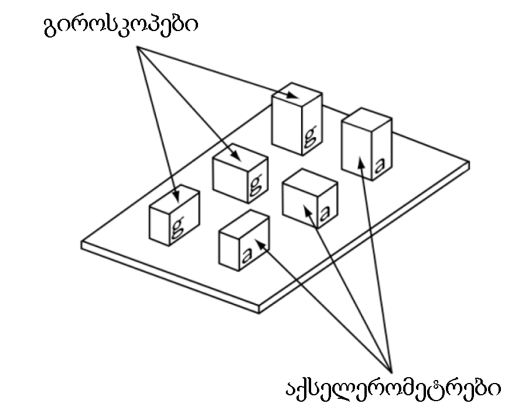
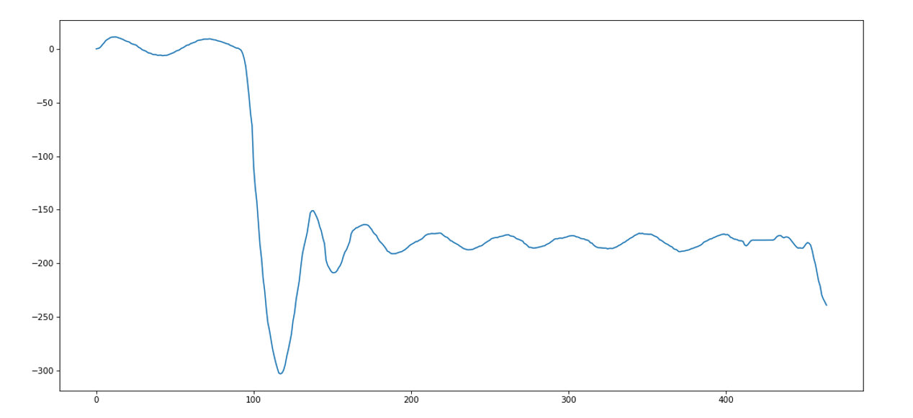
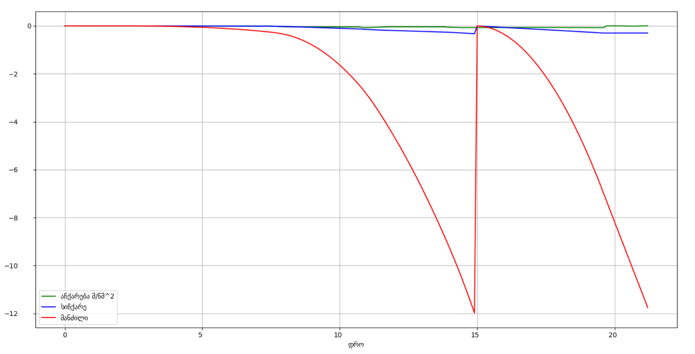

Inertial Navigation System
შესავალი
პროექტის მიზანია stm32 მიკროკონტროლერის გამოყენებით, ინერციულ ნავიგაციაზე მომუშავე მანქანის პლატფორმის შექმნა, რომელიც წინასწარ ჩაწერილი მარშრუტის მიხედვით ივლის, რის შემდეგაც იგივე ტრაექტორიით დაბრუნდება საწყის წერტილში.
მთავარი ნაწილი
პროექტში გამოყენებული მაქვს Gy-521 მოდული, რომელიც მოიცავს, როგორც გიროსკოპს, ასევე აქსელერომეტრსაც. საერთო, ჯამში ვიყენებ სამ ასეთ მოდულს, რომლებიც ერთმანეთს x, y და z ღერძებით ემთხვევიან.
ედია არის იმაში რომ ამ სამმა მოდულმა ერთმანეთის ხმაური უნდა გაანეიტრალონ.
გიროსკოპი - გიროსკოპის მიერ მოცემული კუთხური აჩქარების ერთმაგი ინტეგრირებით ვიგებ მანქანის მიმართულებას.
აქსელერომეტრი - ამ შემთხვევაში პირველი ინტეგრირებით ვიგებთ სიჩქარეს, ხოლო მეორე ინტეგრირებით მანძილს.
PID - პროპორციული, ინტეგრარული და დიფერენციალური რეგულირება
ამ პროექტში ვიყენებ, PID-ს მხოლოდ პროპორციულ და დიფერენციალურ მეთოდებს, რაც მანქანის პლატფორმის მიმართულების რეგულირებისთვის მჭირდება.
1) გრაფიკზე ხედავთ, მანქანის 180 გრადუსით შემობრუნებისას, კუთხის PID რეგულირებას (გარდამავალი პროცესი).

2) აჩქარების (მწვანე), სიჩქარის (ლურჯი) და მანძილის (წითელი) გრაფიკები. გრაფიკზე ჩანს თუ როგორ გადაადგილდება მანქანა ერთი წერდილიდან მეორისკენ, რის შემდეგაც ასრულებს შემობრუნებას 180 გრადუსით და ბრუნდება საწყისს წერტილში.

უკუკავშირისთვის პლატაზე დაყენებული მაქვს esp-01 wifi მოდული, რომლი საშუალებითაც კომპიუტერს ვუგზავნი აქსელერომეტრიდან და გიროსკოპიდან ამოღებულ მონაცემებს და ლაივ რეჟიმში Python-ზე დაწერილი მროგრამის საშუალებით ლაივ რეჟიმში ვაგებ გრაფიკებს.
ელექტრული სქემის მუშაობის აღწერა
ელექტრული სქემის ნაწილი, მოიცავს stm32f103c8 მიკროკონტროლერს, 3 ცალ gy-521 მოდულს, ძრავების დრაივერს და esp-01 wifi მოდულს. Gy-521 მოდულების კონტროლერს I2C პროტოკოლით უკავშირდება და მასთან კავშირი შესაბამისი წესით მიმდინარეობს. ESP-01-ს ვუკავშირდება UART პროტოკოლით 115200 baud rate-ით, რომელსაც ვამუშავებ AP (access point) რეჟიმში. L298N